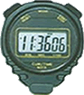
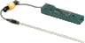
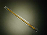
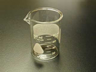

| Material: | ||||
| Clave | Material | Cantidad | Maletín | |
|
I-NT-000DT710-01T |
1 | A |
|
|  | I-L3-00CR2600 |
1 | P |
|
| I-KO-KDSMAXII-000 |
1 |
Almacén 2 |
||
| I-L3-00JE0500 |
1 |
M |
||
| I-OF-00630027 |
Regla de plástico transparente graduada de 30 cm. | 1 |
Almacén 1 |
|
|  | I-KO-0KDS1001 |
1 | I |
|
|  | I-HY-00410028 |
1 | Q |
|
| I-NT-000P7405-02A |
1 | F |
||
|  | I-RV-VASOPREC-100 |
1 | L |
|
| -- |
1 | -- |